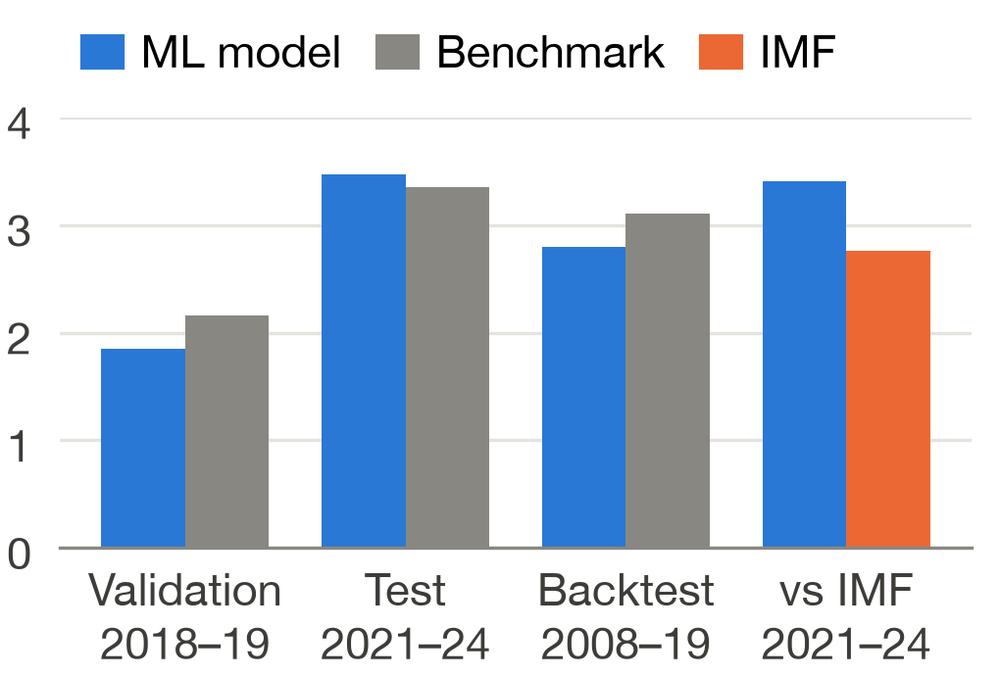
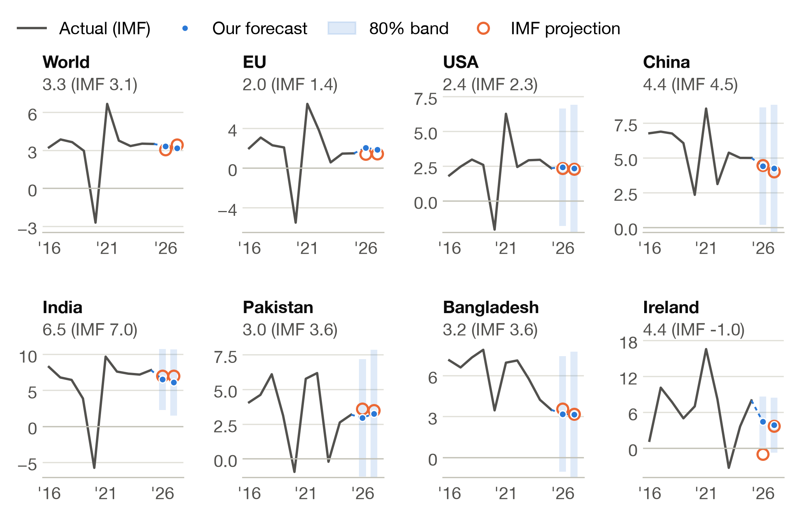

1Problem and data
The aim is to establish whether machine learning can outperform the IMF’s historical forecasts of next-year real GDP growth. To set up this comparison, we obtained annual macroeconomic data from the World Development Indicators (WDI) and World Economic Outlook (WEO) [1], [2]. The integrated panel contains 5,425 observations for 217 economies (2000–2024), including 3,631 complete rows (66.93%). The supervised forecasting panel covers target years 2001–2024 and includes 5,208 observations. Eight predictors were used: real GDP growth, inflation, unemployment, trade, investment, population growth, government debt and current account balance. The target is next year's real GDP growth (%). Performance was quantified using mean absolute error (MAE) and root mean squared error (RMSE), expressed in percentage points.
2Literature review
Jung et al. [3] illustrated the potential of Elastic Net, SuperLearner and recurrent neural networks for macroeconomic forecasting. Bolhuis and Rayner [4] addressed collinearity and nonlinear relationships through machine learning. Chu and Qureshi [5] emphasised the importance of predictor quality and recursive out-of-sample evaluation when comparing regularised regression and tree-based methods. Kant et al. [6] reported strong Random Forest performance in Dutch GDP nowcasting, although their forecasting setting differs from this annual cross-country study. Celasun et al. [7] evaluated WEO forecasts and identified limitations of some medium-term projections relative to simple benchmarks. Together, these studies motivate comparing regularised and nonlinear models relative to both statistical baselines and IMF forecasts.
3Methods
We merged data by country code and year after removing regional aggregates and harmonising IMF KOS/WBG with WDI XKX/PSE. We selected the 2000–2024 period because earlier observations had greater missingness. Next, we aligned targets within countries by shifting GDP growth forward by one year. Exploratory analysis covered distributions, missingness, IQR-based outliers, Pearson and Spearman correlations, and Benjamini–Hochberg FDR-adjusted tests. Six of eight Pearson tests and seven of eight Spearman tests were statistically significant at the 5% level. Current-year GDP growth showed the strongest Pearson (r = 0.214) and Spearman (ρ = 0.428) correlations with next-year GDP growth.
We filled missing predictors using earlier country-specific observations, followed by training medians. We clipped features at the training-set 1st and 99th percentiles; the target remained unchanged. We used a scikit-learn pipeline for missing-value imputation and scaling [8]. Two historical growth features (previous-year growth and a three-year average) increased the feature count to ten. The target, a growth rate, is already differenced, so no stationarity conversion was needed. We implemented three baselines: naive persistence, global training mean, and country training mean.
Ridge and Lasso regression [9], [10] addressed correlated predictors and feature selection, while Random Forest models and Gradient Boosting [11], [12] captured nonlinear relationships. Gradient Boosting used Huber loss [13] to reduce sensitivity to extreme errors. Given the sample size and the limited validation gains from more complex models, we did not select neural networks.
Temporal splits (Table 1) prevented training on future observations. Selected hyperparameters were Ridge α = 0.1, Lasso α = 0.05, Random Forest depth = 4 and Gradient Boosting with 100 trees. We tuned models on 2018–2019 and refit them on 2001–2019 before final testing. To assess robustness, we used an expanding-window backtest (2008–2024), a COVID-19 stress test, Random Forest seed checks, and country-cluster bootstrapping [14]. The historical IMF benchmark matched Fall WEO forecasts from 2020–2023 to actual growth in 2021–2024 [15], yielding 752 matched observations representing 190 economies.
Table 1. Temporal dataset splits.
| Split (target years) | Purpose |
|---|---|
| 2001–2017 | Training |
| 2018–2019 | Validation |
| 2020 | COVID-19 stress test |
| 2021–2024 | Final test |
4Results
Table 2 and Fig. 1 summarise the forecasting results. In this section, we compare model performance across validation, test, and backtest settings. All four models outperformed the baselines during validation, and during 2008–2019 machine learning reduced MAE by approximately 10% relative to the country mean. However, the global mean achieved lower test MAE than Gradient Boosting, and the IMF remained more accurate on the matched sample. Current GDP growth was the dominant predictor, while Lasso excluded unemployment, inflation, government debt and current account balance.
Table 2. Overall forecasting performance (MAE, percentage points).
| Evaluation | ML model | Comparator |
|---|---|---|
| Validation 2018–19 | Random Forest 1.85 | Naive 2.16 |
| Test 2021–24 | Gradient Boosting 3.47 | Global mean 3.35 |
| Backtest 2008–19 | Gradient Boosting 2.80 | Country mean 3.11 |
| COVID-19 2020 | All methods 8.65–9.61 | – |
| IMF-matched (752) | Gradient Boosting 3.41 | IMF 2.76 |

Regional analysis shows that Gradient Boosting was the best method in Sub-Saharan Africa (MAE 2.022), while mean-based benchmarks performed best in the other six regions. To extend this comparison, we also report illustrative 2026 forecasts: India 6.5%, Pakistan 3.0%, Bangladesh 3.2% and Ireland 4.4% (Fig. 2), with 80% bands of about ±4 percentage points. Table 3 presents income-group results and 95% MAE confidence intervals from 1,000 country-cluster bootstrap repetitions.
Table 3. Lowest-MAE method by income group.
| Group | Method | MAE | RMSE | 95% CI | N |
|---|---|---|---|---|---|
| Low | Ridge | 2.40 | 4.88 | 1.48–3.70 | 21 |
| Lower mid. | Grad. Boosting | 2.59 | 4.42 | 2.01–3.36 | 47 |
| Upper mid. | Global mean | 3.29 | 5.52 | 2.68–3.92 | 59 |
| High | Global mean | 3.81 | 7.62 | 2.91–5.22 | 83 |
N = countries; 95% CI is for MAE.

5Analysis and discussion
The models performed better in stable periods but struggled during the 2009, 2020 and 2021 turning points. The backtest MAE difference had a 95% bootstrap interval of −0.48 to −0.17, while Random Forest seed variation (test MAE 3.47–3.52) prevented a clear distinction from Gradient Boosting. Large RMSE values in some groups indicate substantial forecast errors. Regional and income-group differences do not prove causality, particularly for small samples such as North America (three countries). Revised economic data may favour the models compared with historical IMF forecasts, which also gain from expert judgement and contemporaneous information. Current income classifications may not reflect historical conditions. Bootstrap intervals describe uncertainty conditional on the observed test period, not future shocks.
6Ethical and legal considerations
The study uses publicly available country-level data excluding personal information, limiting GDPR concerns. WDI data are licensed under CC BY 4.0 and are subject to third-party restrictions [16]. IMF data permit reuse with attribution and disclosure of material transformations [17]. Unequal data coverage and group sizes may introduce bias. Forecasts should communicate uncertainty and avoid misleading interpretations or stereotyping economies.
7Conclusion and future work
Machine learning improved GDP forecasting relative to simple benchmarks during stable periods but did not outperform the IMF overall. These findings suggest that Ridge and Gradient Boosting were useful for selected income groups, and that model suitability varies across economies. Further work should evaluate real-time dataset vintages, additional leading indicators and shock-sensitive models.
Project code: github.com/farhana273/ml_assignment
References
- World Bank, World Development Indicators (WDI). https://datatopics.worldbank.org/world-development-indicators/
- International Monetary Fund, World Economic Outlook (WEO) Database, October 2026 release. https://data.imf.org/Datasets/WEO
- J.-K. Jung, M. Patnam, and A. Ter-Martirosyan, “An Algorithmic Crystal Ball: Forecasts-based on Machine Learning,” IMF Working Paper WP/18/230, 2018.
- M. A. Bolhuis and B. Rayner, “Deus ex Machina? A Framework for Macro Forecasting with Machine Learning,” IMF Working Paper WP/20/45, 2020.
- B. Chu and S. Qureshi, “Comparing Out-of-Sample Performance of Machine Learning Methods to Forecast U.S. GDP Growth,” Computational Economics, vol. 62, no. 4, pp. 1567–1609, 2023. doi: 10.1007/s10614-022-10312-z.
- D. Kant, A. Pick, and J. de Winter, “Nowcasting GDP using machine learning methods,” AStA Advances in Statistical Analysis, vol. 109, no. 1, pp. 1–24, 2025. doi: 10.1007/s10182-024-00515-0.
- O. Celasun, J. Lee, M. Mrkaic, and A. Timmermann, “An Evaluation of World Economic Outlook Growth Forecasts, 2004–17,” IMF Working Paper WP/21/216, Aug. 2021. doi: 10.5089/9781513587172.001.
- F. Pedregosa et al., “Scikit-learn: Machine Learning in Python,” Journal of Machine Learning Research, vol. 12, pp. 2825–2830, 2011.
- A. E. Hoerl and R. W. Kennard, “Ridge regression: Biased estimation for nonorthogonal problems,” Technometrics, vol. 12, no. 1, pp. 55–67, 1970. doi: 10.1080/00401706.1970.10488634.
- R. Tibshirani, “Regression shrinkage and selection via the lasso,” Journal of the Royal Statistical Society: Series B (Methodological), vol. 58, no. 1, pp. 267–288, 1996. doi: 10.1111/j.2517-6161.1996.tb02080.x.
- L. Breiman, “Random forests,” Machine Learning, vol. 45, no. 1, pp. 5–32, 2001. doi: 10.1023/A:1010933404324.
- J. H. Friedman, “Greedy function approximation: A gradient boosting machine,” The Annals of Statistics, vol. 29, no. 5, pp. 1189–1232, 2001. doi: 10.1214/aos/1013203451.
- P. J. Huber, “Robust estimation of a location parameter,” The Annals of Mathematical Statistics, vol. 35, no. 1, pp. 73–101, 1964. doi: 10.1214/aoms/1177703732.
- B. Efron, “Bootstrap methods: Another look at the jackknife,” The Annals of Statistics, vol. 7, no. 1, pp. 1–26, 1979. doi: 10.1214/aos/1176344552.
- International Monetary Fund, World Economic Outlook Historical Forecasts Database (WEOhistorical.xlsx), real GDP growth (ngdp_rpch) sheet. https://www.imf.org/en/Publications/WEO
- World Bank, “Terms of Use for Datasets.” [Online]. Available: https://www.worldbank.org/ext/en/legal/terms-conditions/datasets [Accessed: Nov. 27, 2026].
- International Monetary Fund, “IMF Copyright and Usage.” [Online]. Available: https://www.imf.org/en/about/copyright-and-terms [Accessed: Nov. 27, 2026].